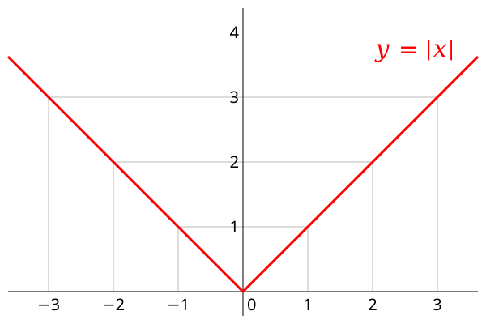

Função Modular
Módulo é uma expressão matemática usada para quando o sinal não importa.
Ex: Se queremos saber a distância percorrida por um carro de velocidade x, não importa se x é positivo ou negativo, a distância sempre vai ser positiva.
A função modular é representada por f(x) = |x|, isso significa que se x ≥ 0, f(x) = x, porém, se x < 0, f(x) = -x
Gráfico da Função Modular
O gráfico dessa função é dividida em duas seções, a descendente, onde x < 0, e a ascendente, onde x ≥ 0.
O gráfico tem uma forma de V, na parte ascendente ele é uma reta e na parte descendente a reta é refletida para cima do eixo x.
Se um valor é somado dentro do módulo, o V se descoloca horizontalmente, se um valor é somado fora do módulo o V se desloca verticalmente
